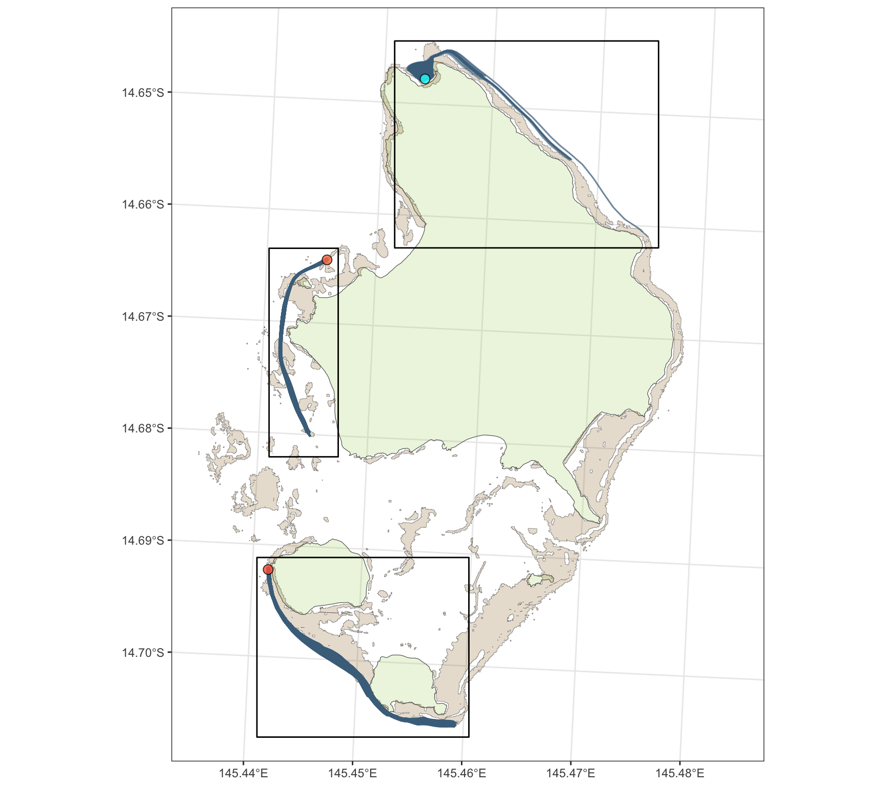
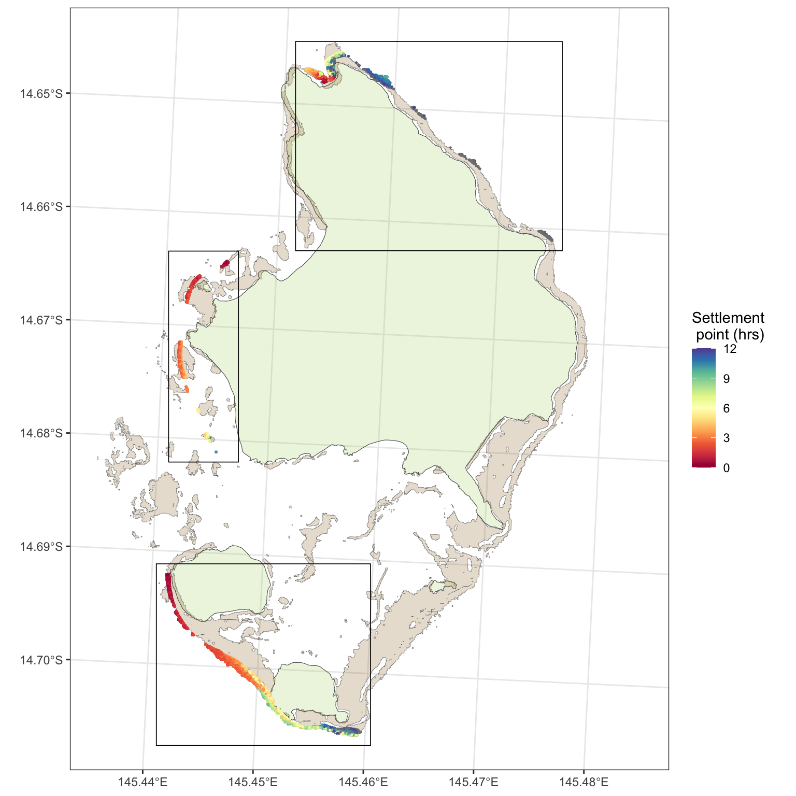
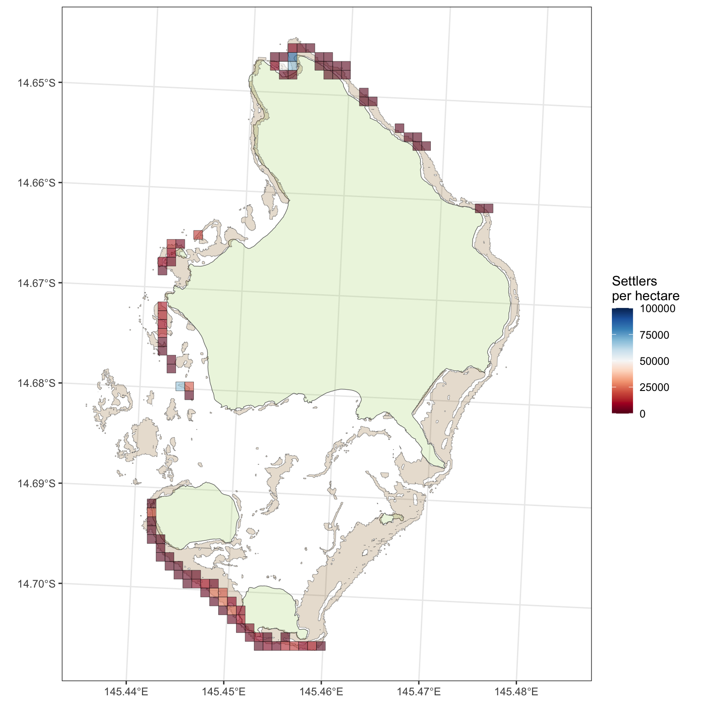
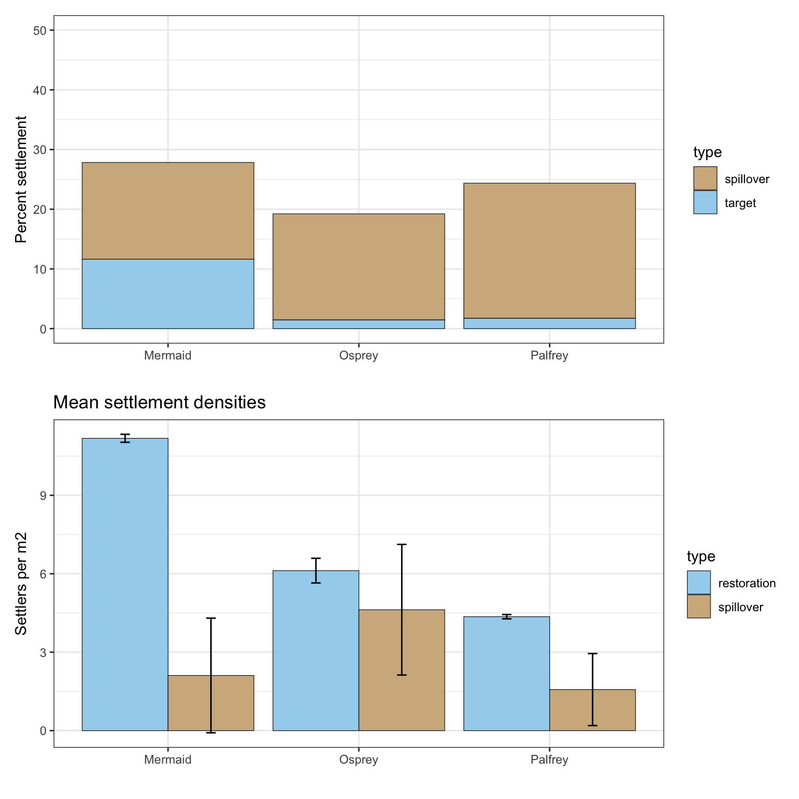
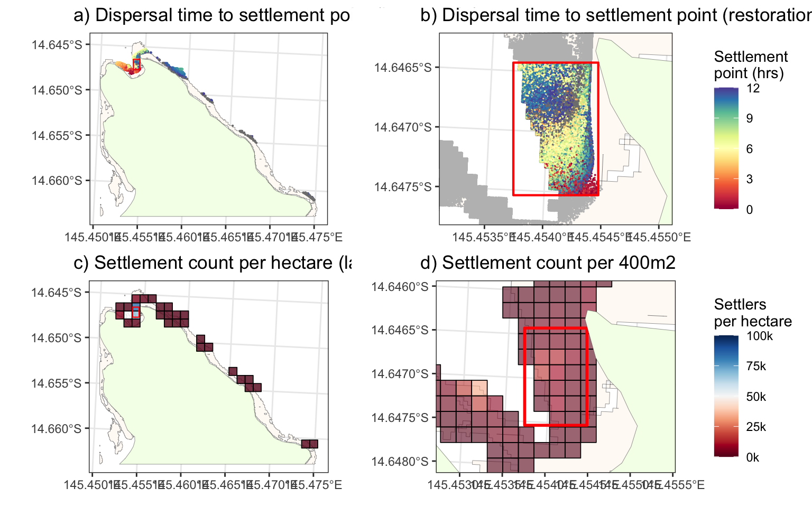
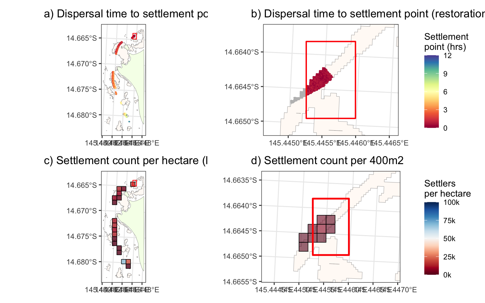
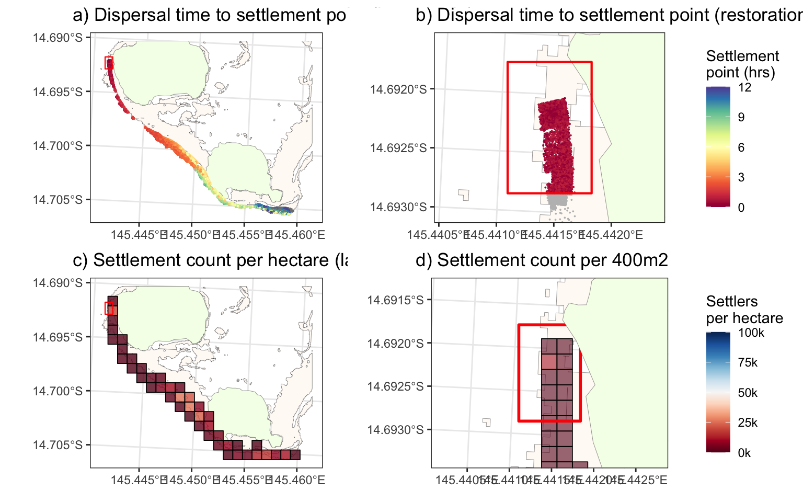
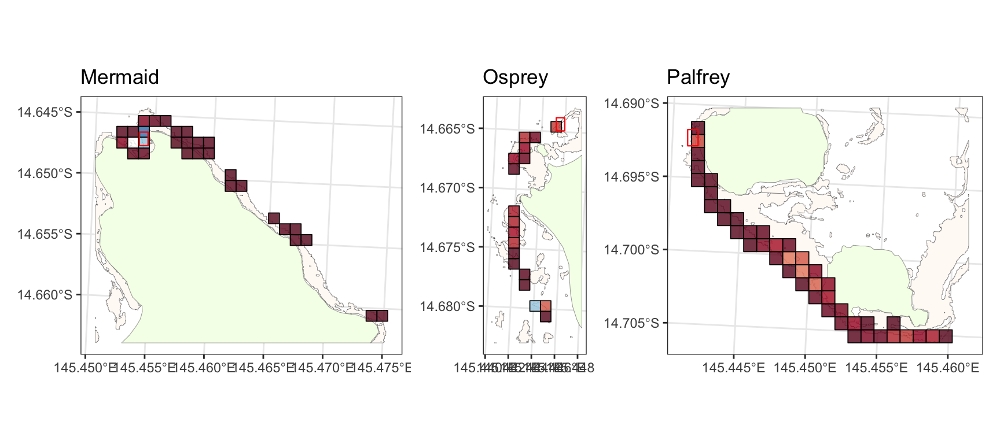
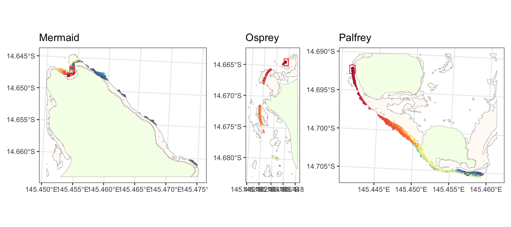

coralseed outputs from a dispersal model of 1000
particles released from a simulated larval release at sheltered bay site
at Lizard Island (nGBR) in December 2022. Larvae are released from the
centre of the restoraton hectare (red box) at mid-tide (17/12/22) and
are tracked across a 720 minute timespan following release.
#library(coralseed)
library(ggplot2)
library(tidyverse)
library(sf)
library(tmap)
library(foreach)
library(doSNOW)
library(tictoc)
library(devtools)
load_all()
1. Spatial results
15189.627 sec elapsed for 1 million particles (4.3hrs)
#
# # import particle tracks (Simple feature collection with 6100000 features and 3 fields)
# sim1_100k <- st_read("/Users/rof011/run_day_12036_lizard_del_14_1512_sim1_100K_10.json")
#
# # setup seascape
# seascape <- seascape_probability(reefoutline=reef_map, habitat=benthic_map)
#
# # set up parallel doPAR
# nsims = 4 #1000
# ncores <- parallel::detectCores()
# cl <- snow::makeCluster(ncores-1)
# registerDoSNOW(cl)
#
# # add progress bar
# pb <- txtProgressBar(max = nsims, style = 3)
# progress <- function(n) setTxtProgressBar(pb, n)
# opts <- list(progress = progress)
#
# # start timer
# tic()
# optimisation <- foreach(i=1:nsims, .combine='rbind', .export = 'sim1_100k', .options.snow = opts, multicombine=FALSE,
# .packages=c("tidyr", "dplyr", "forcats", "sf", "coralseed")) %dopar% {
#
# # subset the main results
# sim_random <- sim1_100k |> dplyr::filter(id %in% sample(0:99999, 1000))
#
# # seed 1k particles with random variance
# output <- seed_particles(input = sim_random, seascape = seascape, seed.value=NULL,
# competency.function = "exponential", simulate.mortality = "typeII",
# simulate.mortality.n = 0.1)
#
# # settle particles with random variance
# output2 <- settle_particles(output, probability="additive", seed.value=NULL, silent=TRUE)
#
#
# return(output2$points |> mutate(iter=i))
# }
#
# snow::stopCluster(cl)
# toc()
#
#loadRDS(optimisation, "/Users/rof011/coralseed/outputs/simulations-optimisation.RDS")
nsims=1000
mermaid <- readRDS("/Users/rof011/coralseed/code/mermaid.RDS")
palfrey <- readRDS("/Users/rof011/coralseed/code/palfrey.RDS")
clamgarden <- readRDS("/Users/rof011/coralseed/code/clamgarden.RDS")
# set restoration hectare mermaid
sf_point_mermaid <- st_sf(geometry = st_sfc(st_point(c(1631110, 8354240)), crs = 20353)) |> mutate(dispersaltime=0)
restoration_hectare_mermaid <- set_restoration_plot(sf_point_mermaid, 80,125)
settledpoints_mermaid <- st_crop(mermaid$points, restoration_hectare_mermaid)
main maps
first map
sf_use_s2(FALSE)
# import gbrmpa boundaries
lizard_map <- st_read("/Users/rof011/coralseed/code/GBRMPA_shp/Great_Barrier_Reef_Features.shp") |>
dplyr::filter(grepl("14-116", LABEL_ID)) |>
dplyr::filter(FEAT_NAME=="Island") |>
st_transform(20353)
## Reading layer `Great_Barrier_Reef_Features' from data source `/Users/rof011/coralseed/code/GBRMPA_shp/Great_Barrier_Reef_Features.shp' using driver `ESRI Shapefile'
## Simple feature collection with 5363 features and 20 fields
## Geometry type: MULTIPOLYGON
## Dimension: XY
## Bounding box: xmin: 138.0012 ymin: -29.17855 xmax: 153.5516 ymax: -10.34855
## Geodetic CRS: GDA94
# Fetch OSM data for the specified bounding box
library(osmdata)
osm_data <- opq(bbox = c(145.42, -14.64, 145.48, -14.72)) %>%
add_osm_feature(key = 'natural') %>%
osmdata_sf()
lizard_osm_map <- osm_data$osm_polygons |>
dplyr::filter(natural=="coastline") |>
select(natural) |>
st_transform(20353)
seascape <- seascape_probability()
# merge seascapes
seascape_all <- seascape %>%
select(-class, -settlement_probability, -habitat_id) %>%
st_combine() %>%
st_cast("POLYGON") %>%
st_union()
# global
mermaid_source <- mermaid$points |> ungroup() |> arrange(dispersaltime) |> slice_head(n=1)
clamgarden_source <- clamgarden$points |> ungroup() |> arrange(dispersaltime) |> slice_head(n=1)
palfrey_source <- palfrey$points |> ungroup() |> arrange(dispersaltime) |> slice_head(n=1)
### first map
global1 <- ggplot() + theme_bw() +
# maps
geom_sf(data=lizard_map, alpha=0.2, fill="darkolivegreen3") +
geom_sf(data=seascape_all, alpha=0.2, fill="orange4", linewidth=0.1) +
# insets
geom_sf(data=st_as_sfc(st_bbox(st_buffer(palfrey$points,100))), fill=NA, color="black", linewidth=0.5) +
geom_sf(data=st_as_sfc(st_bbox(st_buffer(mermaid$points,100))), fill=NA, color="black", linewidth=0.5) +
geom_sf(data=st_as_sfc(st_bbox(st_buffer(clamgarden$points,100))), fill=NA, color="black", linewidth=0.5) +
# paths
geom_sf(data=mermaid$paths |> dplyr::filter(iter %in% seq(1:10)), alpha=0.5, color="skyblue4", linewidth=0.5) +
geom_sf(data=palfrey$paths |> dplyr::filter(iter %in% seq(1:10)), alpha=0.5, color="skyblue4", linewidth=0.5) +
geom_sf(data=clamgarden$paths |> dplyr::filter(iter %in% seq(1:10)), alpha=0.5, color="skyblue4", linewidth=0.5) +
# point source
geom_sf(data=mermaid_source, size=3, shape=21, alpha=0.8, fill="cyan") +
geom_sf(data=clamgarden_source, size=3, shape=21, alpha=0.8, fill="coral") +
geom_sf(data=palfrey_source, size=3, shape=21, alpha=0.8, fill="tomato1") +
# aesthetics
xlim(1628792, 1634200) + ylim(8347643, 8354525)
#coord_sf(xlim=c(1628792, 1634200), ylim=c(8347643, 8354525), datum = NA)
global1

#ggsave("outputs/global1.png", global1, width=1800, height=1800, units="px")
second map
### settlement map
global2 <- ggplot() + theme_bw() +
geom_sf(data=lizard_map, alpha=0.2, fill="darkolivegreen3") +
geom_sf(data=seascape_all, alpha=0.2, fill="orange4", linewidth=0.1) +
geom_sf(data=mermaid$points, size=0.2, aes(color=dispersaltime/60)) +
geom_sf(data=palfrey$points, size=0.2, aes(color=dispersaltime/60)) +
geom_sf(data=clamgarden$points, size=0.2, aes(color=dispersaltime/60)) +
geom_sf(data=st_as_sfc(st_bbox(st_buffer(palfrey$points,100))), fill=NA, color="black", linewidth=0.3) +
geom_sf(data=st_as_sfc(st_bbox(st_buffer(mermaid$points,100))), fill=NA, color="black", linewidth=0.3) +
geom_sf(data=st_as_sfc(st_bbox(st_buffer(clamgarden$points,100))), fill=NA, color="black", linewidth=0.3) +
scale_color_gradientn(colors = RColorBrewer::brewer.pal(11, "Spectral"), limits=c(0,12)) +
labs(color='Settlement \n point (hrs)') + xlim(1628792, 1634200) + ylim(8347643, 8354525)
#coord_sf(xlim=c(1628792, 1634200), ylim=c(8347643, 8354525), datum = NA)
#ggsave("outputs/global2.png", global2, width=1800, height=1800, units="px")
global2

#### third map
# create inset seascapes
seascape_mermaid <- st_crop(seascape_all, st_buffer(mermaid$points, 200))
seascape_palfrey <- st_crop(seascape_all, st_buffer(palfrey$points, 200))
seascape_clamgarden <- st_crop(seascape_all, st_buffer(clamgarden$points, 200))
# create inset islands
islandmap_mermaid <- st_crop(lizard_osm_map, st_buffer(mermaid$points, 200))
islandmap_palfrey <- st_crop(lizard_osm_map, st_buffer(palfrey$points, 200))
islandmap_clamgarden <- st_crop(lizard_osm_map, st_buffer(clamgarden$points, 200))
# create hectare mosaics
density_mermaid <- coralseed::settlement_density(mermaid, cellsize=100, calculate_hull=FALSE)
density_palfrey <- coralseed::settlement_density(palfrey, cellsize=100, calculate_hull=FALSE)
density_clamgarden <- coralseed::settlement_density(clamgarden , cellsize=100, calculate_hull=FALSE)
# create finescale mosaics for later
density_mermaid_finescale <- coralseed::settlement_density(mermaid, cellsize=20, calculate_hull=FALSE)
density_palfrey_finescale <- coralseed::settlement_density(palfrey, cellsize=20, calculate_hull=FALSE)
density_clamgarden_finescale <- coralseed::settlement_density(clamgarden , cellsize=20, calculate_hull=FALSE)
### density map
global3 <- ggplot() + theme_bw() +
geom_sf(data=lizard_map, alpha=0.2, fill="darkolivegreen3") +
geom_sf(data=seascape_all, alpha=0.2, fill="orange4", linewidth=0.1) +
geom_sf(data=density_mermaid$density |> na.omit(), aes(fill=count), alpha=0.6, linewidth=0.1, color="black") +
geom_sf(data=density_palfrey$density |> na.omit(), aes(fill=count), alpha=0.6, linewidth=0.1, color="black") +
# geom_sf(data=density_watsonnorth$density |> na.omit(), aes(fill=density*10), alpha=0.6, linewidth=0.1, color="black") +
geom_sf(data=density_clamgarden$density |> na.omit(), aes(fill=count), alpha=0.6, linewidth=0.1, color="black") +
scale_fill_gradientn(colors = RColorBrewer::brewer.pal(11, "RdBu"), na.value="transparent", limits = c(0, 100000)) +
labs(fill="Settlers \nper hectare") +
xlim(1628792, 1634200) + ylim(8347643, 8354525) #+
#theme(plot.margin=grid::unit(c(0,0,0,0), "mm"))
#coord_sf(xlim=c(1628792, 1634200), ylim=c(8347643, 8354525), datum = NA)
#ggsave("outputs/global3.png", global3, width=1800, height=1800, units="px")
global3

summary statistics
#
# mermaid <- readRDS("/Users/rof011/coralseed/code/mermaid.RDS")
# palfrey <- readRDS("/Users/rof011/coralseed/code/palfrey.RDS")
# clamgarden <- readRDS("/Users/rof011/coralseed/code/clamgarden.RDS")
# set restoration hectare mermaid
sf_point_mermaid <- st_sf(geometry = st_sfc(st_point(c(1631110, 8354240)), crs = 20353)) |> mutate(dispersaltime=0)
restoration_hectare_mermaid <- set_restoration_plot(sf_point_mermaid, 80,125)
settledpoints_mermaid <- st_crop(mermaid$points, restoration_hectare_mermaid)
## Warning: attribute variables are assumed to be spatially constant throughout all geometries
# set restoration hectare clamgarden
restoration_hectare_clamgarden <- coralseed:::ClamGarden_PointSource_OpenLagoon_01 |>
group_by(id) |>
slice_min(n=1, order_by=time) |>
mutate(dispersaltime=0) |>
set_restoration_plot(80,125)
settledpoints_clamgarden <- st_crop(clamgarden$points, restoration_hectare_clamgarden)
## Warning: attribute variables are assumed to be spatially constant throughout all geometries
# set restoration hectare palfrey
restoration_hectare_palfrey <- coralseed:::PalfreyN_PointSource_ForeReefEx_01 |>
group_by(id) |>
slice_min(n=1, order_by=time) |>
mutate(dispersaltime=0) |>
set_restoration_plot(80,125)
settledpoints_palfrey <- st_crop(palfrey$points, restoration_hectare_palfrey)
## Warning: attribute variables are assumed to be spatially constant throughout all geometries
# options(scipen=999)
# paste0("Total larvae released = ", prettyNum((nsims*1000), big.mark=","))
# paste0("Total larvae settled = ", prettyNum(length(unique(mermaid$points$id)), big.mark=","))
# paste0("Larvae settled inside restoration hectare = ", prettyNum(nrow(settledpoints), big.mark=","))
# paste0("Larval spillover settlement outside restoration hectare = ", prettyNum(nrow(mermaid$points) - nrow(settledpoints), big.mark=","))
# stats mermaid
options(scipen=999)
paste0("---Mermaid---")
## [1] "---Mermaid---"
paste0("Total larvae released = ", prettyNum((nsims*1000), big.mark=","))
## [1] "Total larvae released = 1,000,000"
paste0("Total larvae settled = ", prettyNum(length(unique(mermaid$points$id)), big.mark=","))
## [1] "Total larvae settled = 278,303"
paste0("Larvae settled inside restoration hectare = ", prettyNum(nrow(settledpoints_mermaid), big.mark=","))
## [1] "Larvae settled inside restoration hectare = 116,280"
paste0("Larval spillover settlement outside restoration hectare = ", prettyNum(nrow(mermaid$points) - nrow(settledpoints_mermaid), big.mark=","))
## [1] "Larval spillover settlement outside restoration hectare = 162,044"
paste0("")
## [1] ""
# stats clamgarden
paste0("---Osprey---")
## [1] "---Osprey---"
options(scipen=999)
paste0("Total larvae released = ", prettyNum((nsims*1000), big.mark=","))
## [1] "Total larvae released = 1,000,000"
paste0("Total larvae settled = ", prettyNum(length(unique(clamgarden$points$id)), big.mark=","))
## [1] "Total larvae settled = 192,165"
paste0("Larvae settled inside restoration hectare = ", prettyNum(nrow(settledpoints_clamgarden), big.mark=","))
## [1] "Larvae settled inside restoration hectare = 14,687"
paste0("Larval spillover settlement outside restoration hectare = ", prettyNum(nrow(clamgarden$points) - nrow(settledpoints_clamgarden), big.mark=","))
## [1] "Larval spillover settlement outside restoration hectare = 177,541"
paste0("")
## [1] ""
# stats Palfrey
paste0("---Palfrey---")
## [1] "---Palfrey---"
options(scipen=999)
paste0("Total larvae released = ", prettyNum((nsims*1000), big.mark=","))
## [1] "Total larvae released = 1,000,000"
paste0("Total larvae settled = ", prettyNum(length(unique(palfrey$points$id)), big.mark=","))
## [1] "Total larvae settled = 243,432"
paste0("Larvae settled inside restoration hectare = ", prettyNum(nrow(settledpoints_palfrey), big.mark=","))
## [1] "Larvae settled inside restoration hectare = 17,430"
paste0("Larval spillover settlement outside restoration hectare = ", prettyNum(nrow(palfrey$points) - nrow(settledpoints_palfrey), big.mark=","))
## [1] "Larval spillover settlement outside restoration hectare = 226,211"
paste0("")
## [1] ""
a
##### Get summary stats for all sites
### mermaid
# 1) mermaid all points
mermaid_all <- mermaid$points
# 2) mermaid target points
mermaid_target_points <- st_intersection(mermaid$points, restoration_hectare_mermaid)
# 3) mermaid spillover points
mermaid_spillover_points <- st_intersection(mermaid$points,
st_bbox(mermaid$points) %>%
st_as_sfc() %>%
st_set_crs(st_crs(mermaid$points)) |>
st_difference(restoration_hectare_mermaid))
#mermaid_all_stats <- settlement_statistics(mermaid_all, concavehull=FALSE)
mermaid_restoration_stats <- settlement_statistics(mermaid_target_points, concavehull=TRUE)
mermaid_spillover_stats <- settlement_statistics(mermaid_spillover_points, concavehull=TRUE)
### clamgarden
# 1) clamgarden all points
clamgarden_all <- clamgarden$points
# 2) clamgarden target points
clamgarden_target_points <- st_intersection(clamgarden$points, restoration_hectare_clamgarden)
# 3) clamgarden spillover points
clamgarden_spillover_points <- st_intersection(clamgarden$points,
st_bbox(clamgarden$points) %>%
st_as_sfc() %>%
st_set_crs(st_crs(clamgarden$points)) |>
st_difference(restoration_hectare_clamgarden))
#(nrow(clamgarden_target_points)/nrow(clamgarden$points)) *100
#clamgarden_all_stats <- settlement_statistics(clamgarden_all, concavehull=FALSE)
clamgarden_restoration_stats <- settlement_statistics(clamgarden_target_points, concavehull=TRUE)
clamgarden_spillover_stats <- settlement_statistics(clamgarden_spillover_points, concavehull=TRUE)
### palfrey
# 1) palfrey all points
#palfrey_all <- palfrey$points
# 2) palfrey target points
palfrey_target_points <- st_intersection(palfrey$points, restoration_hectare_palfrey)
# 3) palfrey spillover points
palfrey_spillover_points <- st_intersection(palfrey$points,
st_bbox(palfrey$points) %>%
st_as_sfc() %>%
st_set_crs(st_crs(palfrey$points)) |>
st_difference(restoration_hectare_palfrey))
#(nrow(palfrey_target_points)/nrow(palfrey$points)) *100
#palfrey_all_stats <- settlement_statistics(palfrey_all, concavehull=FALSE)
palfrey_restoration_stats <- settlement_statistics(palfrey_target_points, concavehull=TRUE)
palfrey_spillover_stats <- settlement_statistics(palfrey_spillover_points, concavehull=TRUE)
### plots
#
# all_settlement_points <- rbind(mermaid_restoration_stats$grid |> mutate(site="Mermaid", type="target"),
# clamgarden_restoration_stats$grid |> mutate(site="Osprey", type="target"),
# palfrey_restoration_stats$grid |> mutate(site="Palfrey", type="target"),
# mermaid_spillover_stats$grid |> mutate(site="Mermaid", type="spillover"),
# clamgarden_spillover_stats$grid |> mutate(site="Osprey", type="spillover"),
# palfrey_spillover_stats$grid |> mutate(site="Palfrey", type="spillover")) |>
# na.omit() |> as.data.frame()
#
#
# ggplot() + theme_bw() + facet_wrap(~site) +
# geom_density(data=all_settlement_points, aes(density, color=type))
#
# calculate mean densities
mean.density.all <- data.frame(site=c(rep("Mermaid",2), rep("Osprey",2), rep("Palfrey",2)),
type=rep(c("restoration", "spillover"), 3),
mean=c(mean(mermaid_restoration_stats$grid$density, na.rm=TRUE),
mean(mermaid_spillover_stats$grid$density, na.rm=TRUE),
mean(clamgarden_restoration_stats$grid$density, na.rm=TRUE),
mean(clamgarden_spillover_stats$grid$density, na.rm=TRUE),
mean(palfrey_restoration_stats$grid$density, na.rm=TRUE),
mean(palfrey_spillover_stats$grid$density, na.rm=TRUE)),
se=c(mean(mermaid_spillover_stats$grid$density, na.rm=TRUE) / sqrt(nrow(mermaid_spillover_stats$grid |> na.omit())),
mean(mermaid_restoration_stats$grid$density, na.rm=TRUE) / sqrt(nrow(mermaid_restoration_stats$grid |> na.omit())),
mean(clamgarden_spillover_stats$grid$density, na.rm=TRUE)/ sqrt(nrow(clamgarden_spillover_stats$grid |> na.omit())),
mean(clamgarden_restoration_stats$grid$density, na.rm=TRUE)/ sqrt(nrow(clamgarden_restoration_stats$grid |> na.omit())),
mean(palfrey_spillover_stats$grid$density, na.rm=TRUE)/ sqrt(nrow(palfrey_spillover_stats$grid |> na.omit())),
mean(palfrey_restoration_stats$grid$density, na.rm=TRUE)/ sqrt(nrow(palfrey_restoration_stats$grid |> na.omit()))
)
)
mean_density_plot <- ggplot(data=mean.density.all, aes(x=site, fill=type, ymin=mean-se, ymax=mean+se)) +
theme_bw() +
ggtitle("Mean settlement densities") +
geom_bar(aes(y=mean), stat="identity", position=position_dodge(),
color="black", linewidth=0.2, show.legend=TRUE) +
geom_errorbar(position=position_dodge(width=0.9), width=0.1) +
scale_fill_manual(values=rep(c( "lightskyblue2", "tan"),2)) +
ylab("Settlers per m2") + xlab("")
#mean_density_plot
#
# (sum(mermaid_restoration_stats$grid$count, na.rm=TRUE)/nrow(mermaid$points))*100
# (nrow(mermaid$points)-sum(mermaid_restoration_stats$grid$count, na.rm=TRUE))/nrow(mermaid$points)*100
#
# (sum(palfrey_restoration_stats$grid$count, na.rm=TRUE)/nrow(clamgarden$points))*100
# (nrow(clamgarden$points)-sum(palfrey_restoration_stats$grid$count, na.rm=TRUE))/nrow(clamgarden$points)*100
#
# (sum(palfrey_restoration_stats$grid$count, na.rm=TRUE)/nrow(palfrey$points))*100
# (nrow(palfrey$points)-sum(palfrey_restoration_stats$grid$count, na.rm=TRUE))/nrow(palfrey$points)*100
### calculate percent settlement total and spillover
df2 <- data.frame(site=c(rep("Mermaid",2),
rep("Osprey",2),
rep("Palfrey",2)),
type=rep(c( "target", "spillover"), 3),
percent=c(
(sum(mermaid_restoration_stats$grid$count, na.rm=TRUE))*0.0001,
(sum(mermaid_spillover_stats$grid$count, na.rm=TRUE))*0.0001,
(sum(clamgarden_restoration_stats$grid$count, na.rm=TRUE))*0.0001,
(sum(clamgarden_spillover_stats$grid$count, na.rm=TRUE))*0.0001,
(sum(palfrey_restoration_stats$grid$count, na.rm=TRUE))*0.0001,
(sum(palfrey_spillover_stats$grid$count, na.rm=TRUE))*0.0001
))
(sum(mermaid_restoration_stats$grid$count, na.rm=TRUE))/
(sum(mermaid_spillover_stats$grid$count, na.rm=TRUE)+sum(mermaid_restoration_stats$grid$count, na.rm=TRUE))
## [1] 0.4177865
(sum(clamgarden_restoration_stats$grid$count, na.rm=TRUE))/
(sum(clamgarden_spillover_stats$grid$count, na.rm=TRUE)+sum(clamgarden_restoration_stats$grid$count, na.rm=TRUE))
## [1] 0.07640406
(sum(palfrey_restoration_stats$grid$count, na.rm=TRUE))/
(sum(palfrey_spillover_stats$grid$count, na.rm=TRUE)+sum(palfrey_restoration_stats$grid$count, na.rm=TRUE))
## [1] 0.07153968
percent_settlement <- ggplot() + theme_bw() +
geom_bar(data=df2, aes(fill=type, y=percent, x=site),
position="stack", stat="identity", color="black", linewidth=0.2) +
scale_fill_manual(values=c("tan", "lightskyblue2")) +
ylim(0,50) + ylab("Percent settlement") + xlab("")
library(patchwork)
settlement_dynamics <- percent_settlement / mean_density_plot
settlement_dynamics

#ggsave("/Users/rof011/coralseed/outputs/settlement_dynamics.png", settlement_dynamics, width=3000, height=2500, units="px")
a
Mermaid output
library(patchwork)
library(colorspace)
library(RColorBrewer)
### inset Mermaid
mermaid_a <- ggplot() + theme_bw() +
ggtitle("a) Dispersal time to settlement point (large-scale)") +
geom_sf(data=seascape_mermaid, alpha=1, fill=lighten("burlywood3",0.95), linewidth=0.1) +
geom_sf(data=islandmap_mermaid, alpha=1, fill=lighten("darkolivegreen3", 0.95), linewidth=0.1) +
geom_sf(data=mermaid$points, size=0.1, aes(color=dispersaltime/60), show.legend=FALSE) +
geom_sf(data=restoration_hectare_mermaid, linewidth=0.4, color="red", fill=NA) +
labs(color='Settlement \npoint (hrs)') +
scale_color_gradientn(colors = RColorBrewer::brewer.pal(11, "Spectral"), limits=c(0,12)) +
theme(legend.position="top", legend.key.size = unit(1.5, "cm"), plot.margin=unit(c(0,0.1,0.1,0.1), "cm"))
mermaid_b <- ggplot() + theme_bw() +
ggtitle("b) Dispersal time to settlement point (restoration hectare)") +
geom_sf(data=seascape_mermaid, alpha=1, fill=lighten("burlywood3",0.95), linewidth=0.1) +
geom_sf(data=islandmap_mermaid, alpha=1, fill=lighten("darkolivegreen3", 0.95), linewidth=0.1) +
geom_sf(data=mermaid$points, size=0.00001, color="grey") +
geom_sf(data=settledpoints_mermaid, size=0.00001, aes(color=dispersaltime/60)) +
geom_sf(data=restoration_hectare_mermaid, linewidth=0.75, color="red", fill=NA) +
labs(color='Settlement \npoint (hrs)') +
scale_color_gradientn(colors = RColorBrewer::brewer.pal(11, "Spectral"), limits=c(0,12)) +
xlim((restoration_hectare_mermaid |> st_buffer(60) |> st_bbox())[1],
(restoration_hectare_mermaid |> st_buffer(60) |> st_bbox())[3]) +
ylim((restoration_hectare_mermaid |> st_buffer(20) |> st_bbox())[2],
(restoration_hectare_mermaid |> st_buffer(20) |> st_bbox())[4]) +
theme(legend.position="right", plot.margin=unit(c(0,0.1,0.1,0.1), "cm"))
mermaid_c <- ggplot() + theme_bw() +
ggtitle("c) Settlement count per hectare (largescale)") +
geom_sf(data=seascape_mermaid, alpha=1, fill=lighten("burlywood3",0.95), linewidth=0.1) +
geom_sf(data=islandmap_mermaid, alpha=1, fill=lighten("darkolivegreen3", 0.95), linewidth=0.1) +
geom_sf(data=(density_mermaid$density |> na.omit() |> select(count)),
aes(fill=count), alpha=0.8, linewidth=0.3, color="black", show.legend=FALSE) +
geom_sf(data=restoration_hectare_mermaid, linewidth=0.4, color="red", fill=NA) +
labs(fill="Settlers \nper hectare") +
scale_fill_gradientn(colors = brewer.pal(11, "RdBu"),
limits = c(0, 100000),
na.value = "transparent",
labels = function(x) paste0(scales::number(x / 1000, accuracy = 1), "k")) #+ # Convert to 'k' format
theme(plot.margin=unit(c(0,0.1,0.1,0.1), "cm"))
## List of 1
## $ plot.margin: 'simpleUnit' num [1:4] 0cm 0.1cm 0.1cm 0.1cm
## ..- attr(*, "unit")= int 1
## - attr(*, "class")= chr [1:2] "theme" "gg"
## - attr(*, "complete")= logi FALSE
## - attr(*, "validate")= logi TRUE
mermaid_d <- ggplot() + theme_bw() +
ggtitle("d) Settlement count per 400m2") +
geom_sf(data=seascape_mermaid, alpha=1, fill=lighten("burlywood3",0.95), linewidth=0.1) +
geom_sf(data=(density_mermaid_finescale$density |> na.omit() |> select(count)),
aes(fill=count), alpha=0.6, linewidth=0.3, color="black") +
geom_sf(data=restoration_hectare_mermaid, linewidth=1, color="red", fill=NA) +
geom_sf(data=islandmap_mermaid, alpha=1, fill=lighten("darkolivegreen3", 0.95), linewidth=0.1) +
labs(fill="Settlers \nper hectare") +
scale_fill_gradientn(colors = brewer.pal(11, "RdBu"),
limits = c(0, 100000),
na.value = "transparent",
labels = function(x) paste0(scales::number(x / 1000, accuracy = 1), "k")) + # Convert to 'k' format
xlim((restoration_hectare_mermaid |> st_buffer(100) |> st_bbox())[1],
(restoration_hectare_mermaid |> st_buffer(100) |> st_bbox())[3]) +
ylim((restoration_hectare_mermaid |> st_buffer(50) |> st_bbox())[2],
(restoration_hectare_mermaid |> st_buffer(50) |> st_bbox())[4]) +
theme(legend.position="right", plot.margin=unit(c(0,0.1,0.1,0.1), "cm"))
mermaid_output <- mermaid_a + mermaid_b + mermaid_c + mermaid_d + plot_layout(widths = c(1, 1))
#ggsave("outputs/mermaid_output.png", mermaid_output, width=4000, height=3400, units="px")
mermaid_output

Osprey output
### inset clamgarden
clamgarden_a <- ggplot() + theme_bw() +
ggtitle("a) Dispersal time to settlement point (large-scale)") +
geom_sf(data=seascape_clamgarden, alpha=1, fill=lighten("burlywood3",0.95), linewidth=0.1) +
geom_sf(data=islandmap_clamgarden, alpha=1, fill=lighten("darkolivegreen3", 0.95), linewidth=0.1) +
geom_sf(data=clamgarden$points, size=0.1, aes(color=dispersaltime/60), show.legend=FALSE) +
geom_sf(data=restoration_hectare_clamgarden, linewidth=0.4, color="red", fill=NA) +
labs(color='Settlement \npoint (hrs)') +
scale_color_gradientn(colors = RColorBrewer::brewer.pal(11, "Spectral"), limits=c(0,12)) +
theme(legend.position="top", legend.key.size = unit(1.5, "cm"))
clamgarden_b <- ggplot() + theme_bw() +
ggtitle("b) Dispersal time to settlement point (restoration hectare)") +
geom_sf(data=seascape_clamgarden, alpha=1, fill=lighten("burlywood3",0.95), linewidth=0.1) +
geom_sf(data=islandmap_clamgarden, alpha=1, fill=lighten("darkolivegreen3", 0.95), linewidth=0.1) +
geom_sf(data=clamgarden$points, size=0.00001, color="grey") +
geom_sf(data=settledpoints_clamgarden, size=0.00001, aes(color=dispersaltime/60)) +
geom_sf(data=restoration_hectare_clamgarden, linewidth=0.75, color="red", fill=NA) +
labs(color='Settlement \npoint (hrs)') +
scale_color_gradientn(colors = RColorBrewer::brewer.pal(11, "Spectral"), limits=c(0,12)) +
xlim((restoration_hectare_clamgarden |> st_buffer(60) |> st_bbox())[1],
(restoration_hectare_clamgarden |> st_buffer(60) |> st_bbox())[3]) +
ylim((restoration_hectare_clamgarden |> st_buffer(20) |> st_bbox())[2],
(restoration_hectare_clamgarden |> st_buffer(20) |> st_bbox())[4]) +
theme(legend.position="right")
clamgarden_c <- ggplot() + theme_bw() +
ggtitle("c) Settlement count per hectare (largescale)") +
geom_sf(data=seascape_clamgarden, alpha=1, fill=lighten("burlywood3",0.95), linewidth=0.1) +
geom_sf(data=islandmap_clamgarden, alpha=1, fill=lighten("darkolivegreen3", 0.95), linewidth=0.1) +
geom_sf(data=(density_clamgarden$density |> na.omit() |> select(count)),
aes(fill=count), alpha=0.8, linewidth=0.3, color="black", show.legend=FALSE) +
geom_sf(data=restoration_hectare_clamgarden, linewidth=0.4, color="red", fill=NA) +
labs(fill="Settlers \nper hectare") +
scale_fill_gradientn(colors = brewer.pal(11, "RdBu"),
limits = c(0, 100000),
na.value = "transparent",
labels = function(x) paste0(scales::number(x / 1000, accuracy = 1), "k")) #+ # Convert to 'k' format
# theme(legend.position="bottom", legend.text = element_text(angle = 90))
clamgarden_d <- ggplot() + theme_bw() +
ggtitle("d) Settlement count per 400m2") +
geom_sf(data=seascape_clamgarden, alpha=1, fill=lighten("burlywood3",0.95), linewidth=0.1) +
geom_sf(data=(density_clamgarden_finescale$density |> na.omit() |> select(count)),
aes(fill=count), alpha=0.6, linewidth=0.3, color="black") +
geom_sf(data=restoration_hectare_clamgarden, linewidth=1, color="red", fill=NA) +
geom_sf(data=islandmap_clamgarden, alpha=1, fill=lighten("darkolivegreen3", 0.95), linewidth=0.1) +
labs(fill="Settlers \nper hectare") +
scale_fill_gradientn(colors = brewer.pal(11, "RdBu"),
limits = c(0, 100000),
na.value = "transparent",
labels = function(x) paste0(scales::number(x / 1000, accuracy = 1), "k")) + # Convert to 'k' format
xlim((restoration_hectare_clamgarden |> st_buffer(100) |> st_bbox())[1],
(restoration_hectare_clamgarden |> st_buffer(100) |> st_bbox())[3]) +
ylim((restoration_hectare_clamgarden |> st_buffer(50) |> st_bbox())[2],
(restoration_hectare_clamgarden |> st_buffer(50) |> st_bbox())[4]) +
theme(legend.position="right")
clamgarden_output <- clamgarden_a + clamgarden_b + clamgarden_c + clamgarden_d + plot_layout(widths = c(1, 1))
#ggsave("outputs/clamgarden_output.png", clamgarden_output, width=4800, height=4000, units="px")
clamgarden_output

Palfrey output
### inset palfrey
palfrey_a <- ggplot() + theme_bw() +
ggtitle("a) Dispersal time to settlement point (large-scale)") +
geom_sf(data=seascape_palfrey, alpha=1, fill=lighten("burlywood3",0.95), linewidth=0.1) +
geom_sf(data=islandmap_palfrey, alpha=1, fill=lighten("darkolivegreen3", 0.95), linewidth=0.1) +
geom_sf(data=palfrey$points, size=0.1, aes(color=dispersaltime/60), show.legend=FALSE) +
geom_sf(data=restoration_hectare_palfrey, linewidth=0.4, color="red", fill=NA) +
labs(color='Settlement \npoint (hrs)') +
scale_color_gradientn(colors = RColorBrewer::brewer.pal(11, "Spectral"), limits=c(0,12)) +
theme(legend.position="top", plot.margin=unit(c(0,0.1,0.1,0.1), "cm"))
palfrey_b <- ggplot() + theme_bw() +
ggtitle("b) Dispersal time to settlement point (restoration hectare)") +
geom_sf(data=seascape_palfrey, alpha=1, fill=lighten("burlywood3",0.95), linewidth=0.1) +
geom_sf(data=islandmap_palfrey, alpha=1, fill=lighten("darkolivegreen3", 0.95), linewidth=0.1) +
geom_sf(data=palfrey$points, size=0.00001, color="grey") +
geom_sf(data=settledpoints_palfrey, size=0.00001, aes(color=dispersaltime/60)) +
geom_sf(data=restoration_hectare_palfrey, linewidth=0.75, color="red", fill=NA) +
labs(color='Settlement \npoint (hrs)') +
scale_color_gradientn(colors = RColorBrewer::brewer.pal(11, "Spectral"), limits=c(0,12)) +
xlim((restoration_hectare_palfrey |> st_buffer(60) |> st_bbox())[1],
(restoration_hectare_palfrey |> st_buffer(60) |> st_bbox())[3]) +
ylim((restoration_hectare_palfrey |> st_buffer(20) |> st_bbox())[2],
(restoration_hectare_palfrey |> st_buffer(20) |> st_bbox())[4]) +
theme(legend.position="right", plot.margin=unit(c(0,0.1,0.1,0.1), "cm"))
palfrey_c <- ggplot() + theme_bw() +
ggtitle("c) Settlement count per hectare (largescale)") +
geom_sf(data=seascape_palfrey, alpha=1, fill=lighten("burlywood3",0.95), linewidth=0.1) +
geom_sf(data=islandmap_palfrey, alpha=1, fill=lighten("darkolivegreen3", 0.95), linewidth=0.1) +
geom_sf(data=(density_palfrey$density |> na.omit() |> select(count)),
aes(fill=count), alpha=0.8, linewidth=0.3, color="black", show.legend=FALSE) +
geom_sf(data=restoration_hectare_palfrey, linewidth=0.4, color="red", fill=NA) +
labs(fill="Settlers \nper hectare") +
scale_fill_gradientn(colors = brewer.pal(11, "RdBu"),
limits = c(0, 100000),
na.value = "transparent",
labels = function(x) paste0(scales::number(x / 1000, accuracy = 1), "k")) #+ # Convert to 'k' format
theme(plot.margin=unit(c(0,0.1,0.1,0.1), "cm"))
## List of 1
## $ plot.margin: 'simpleUnit' num [1:4] 0cm 0.1cm 0.1cm 0.1cm
## ..- attr(*, "unit")= int 1
## - attr(*, "class")= chr [1:2] "theme" "gg"
## - attr(*, "complete")= logi FALSE
## - attr(*, "validate")= logi TRUE
palfrey_d <- ggplot() + theme_bw() +
ggtitle("d) Settlement count per 400m2") +
geom_sf(data=seascape_palfrey, alpha=1, fill=lighten("burlywood3",0.95), linewidth=0.1) +
geom_sf(data=(density_palfrey_finescale$density |> na.omit() |> select(count)),
aes(fill=count), alpha=0.6, linewidth=0.3, color="black") +
geom_sf(data=restoration_hectare_palfrey, linewidth=1, color="red", fill=NA) +
geom_sf(data=islandmap_palfrey, alpha=1, fill=lighten("darkolivegreen3", 0.95), linewidth=0.1) +
labs(fill="Settlers \nper hectare") +
scale_fill_gradientn(colors = brewer.pal(11, "RdBu"),
limits = c(0, 100000),
na.value = "transparent",
labels = function(x) paste0(scales::number(x / 1000, accuracy = 1), "k")) + # Convert to 'k' format
xlim((restoration_hectare_palfrey |> st_buffer(100) |> st_bbox())[1],
(restoration_hectare_palfrey |> st_buffer(100) |> st_bbox())[3]) +
ylim((restoration_hectare_palfrey |> st_buffer(50) |> st_bbox())[2],
(restoration_hectare_palfrey |> st_buffer(50) |> st_bbox())[4]) +
theme(legend.position="right", plot.margin=unit(c(0,0.1,0.1,0.1), "cm"))
palfrey_output <- palfrey_a + palfrey_b + palfrey_c + palfrey_d + plot_layout(widths = c(1, 1))
#ggsave("outputs/palfrey_output.png", palfrey_output, width=4000, height=3400, units="px")
palfrey_output

combined_output
# stats_mermaid <- settlement_statistics(palfrey$points, concavehull = FALSE)
# stats_osprey <- settlement_statistics(palfrey$points, concavehull = FALSE)
# stats_palfrey <- settlement_statistics(palfrey$points, concavehull = FALSE)
### combined
combined_output <- (mermaid_c + ggtitle("Mermaid") + theme(legend.position = "none")) |
(clamgarden_c + ggtitle("Osprey") + theme(legend.position = "none")) |
(palfrey_c + ggtitle("Palfrey") + theme(legend.position = "none"))
combined_output

#ggsave("outputs/combined_broadscale.png", combined_output, width=4800, height=4000, units="px")
combined_output_seeds
combined_output_seeds <- (mermaid_a + ggtitle("Mermaid") + theme(legend.position = "none")) |
(clamgarden_a + ggtitle("Osprey") + theme(legend.position = "none")) |
(palfrey_a + ggtitle("Palfrey") + theme(legend.position = "none"))
combined_output_seeds

#ggsave("outputs/combined_broadscale_seeds.png", combined_output_seeds, width=4800, height=4000, units="px")